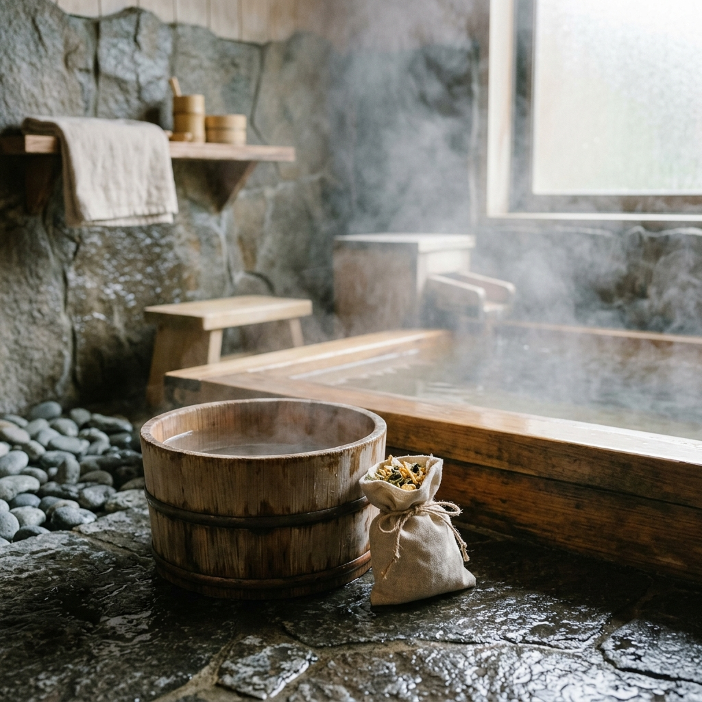
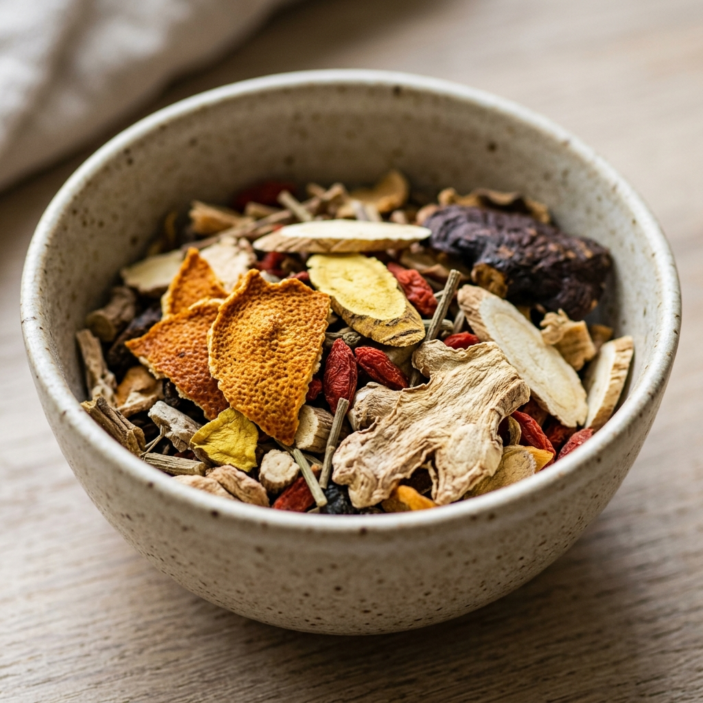

芯から温まり、心までほぐれる。生薬と植物の力で「わたし」に戻る養生バスタイム
2026.04.26

日が沈み、一日の終わりが近づく頃。私たちは知らず知らずのうちに、多くの緊張を体に抱え込んでいます。パソコン作業で強張った肩、冷房や外気で冷え切った足先、そして、絶え間なく動き続ける思考。そんな「外向き」の自分を一度リセットし、本来の「わたし」へと戻る場所。それがバスルームです。
セルフケアブランド「fucuu（フクウ）」が大切にしているのは、植物が持つありのままの生命力を借りて、心身を「フクフク」とした幸福感で満たすこと。今回は、古くから伝わる「生薬（しょうやく）」の知恵を取り入れた温活と、日常の中で無理なく続けられる養生のコツについてお話しします。

1. なぜ「生薬」なのか。100%天然がもたらす深い安らぎ
「生薬」と聞くと、少し難しいイメージを持つかもしれません。しかし、生薬とは植物の根や葉、果実などを乾燥させ、その薬効を閉じ込めた天然の贈り物。化学的に合成された入浴剤との大きな違いは、その「複雑さ」にあります。
自然界の植物には、数百種類もの成分が絶妙なバランスで含まれています。これらが温かなお湯に溶け出すことで、肌を優しく包み込み、体の芯まで熱を届けてくれます。単に表面を温めるだけでなく、じわじわと内側から巡りを整えていくのが、生薬入浴の醍醐味です。
fucuuが選んだのは、余計なものを一切加えない無添加・100%天然の素材。香料としてではなく、その植物が育んできたエネルギーそのものを全身で受け止める。そんな贅沢な時間が、硬くなった心を柔らかく解きほぐしてくれます。
2. 「温活」は最高のセルフケア。香りと温もりの相乗効果
体を温める「温活」は、現代人にとって最もシンプルな養生のひとつです。体温が一度上がると、基礎代謝や免疫力への良い影響だけでなく、自律神経のバランスが整いやすくなると言われています。
そこに欠かせないのが「香り」の力です。fucuuでは、日本人の感性に馴染み深い国産アロマにこだわっています。清々しいクロモジや、心を落ち着かせるヒノキ。これらの香りは、鼻から脳へとダイレクトに届き、深いリラックス状態へと誘います。
「あぁ、心地よい」と感じる瞬間、脳内では幸福感を感じる物質が分泌されます。生薬による温熱効果と、植物の芳香による癒やし。この掛け合わせによって、ただの入浴が「自分を愛でるための儀式」へと変わるのです。

3. 忙しい日常に「余白」を生む、現代の養生スタイル
「養生（ようじょう）」とは、決して特別なことではありません。日々の暮らしの中で、自分の体調の変化に耳を傾け、それを整えていく習慣のこと。何もしない「余白」の時間を持つことが、結果として明日のパフォーマンスを支えてくれます。
例えば、お風呂上がりにスマホを見るのをやめて、温まった体でゆっくりとストレッチをする。あるいは、生薬の香りの余韻に浸りながら温かい白湯を飲む。こうした小さな積み重ねが、自分自身の土台を作ります。fucuuは、その「きっかけ」を作る存在でありたいと考えています。
Tips: 明日のわたしを整える入浴の極意
1. お湯の温度は「38〜40度」： 熱すぎると交感神経が優位になってしまいます。ぬるめのお湯に15〜20分、ゆっくり浸かることで深部体温が上がり、良質な睡眠に繋がります。
2. 香りの深呼吸： 湯船に浸かったら、まずは大きく3回深呼吸を。植物の成分を肺からも取り込むイメージで、ゆっくりと息を吐き出しましょう。
3. デジタルデトックス： お風呂場にスマホは持ち込まない。水の音と自分の鼓動にだけ集中する時間が、脳の疲れをリセットしてくれます。
まとめ：フクフクと、満たされる毎日へ
植物のちからを借りて、本来の自分に立ち返る。fucuuがお届けする生薬入浴剤と国産アロマは、あなたが「わたしに戻る」ための道しるべです。
頑張りすぎてしまった日も、なんとなく心が沈む日も。温かなお湯に身を委ね、生薬の香りに包まれることで、心身は再び潤いを取り戻します。自分を慈しむ時間は、決してわがままではありません。あなたがあなたらしく、フクフクとした笑顔で毎日を過ごすための、大切なステップなのです。
今夜は少しだけ早くお風呂を沸かして、植物の優しさに身を任せてみませんか？
fucuuの生薬入浴剤・国産アロマは、BASEオンラインショップでご購入いただけます。
BASEで購入する